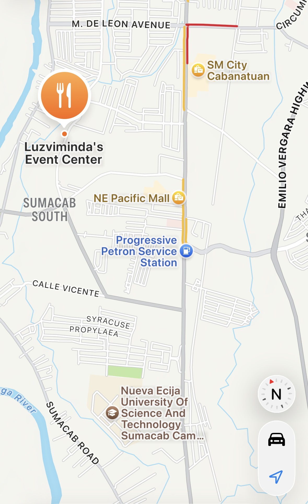

VENUE LOCATION

The event will take place at Luzviminda’s Events place - Cabanatuan city, N.E.
Above is a direction guide on how to get to the place.
Guests coming from San Jose City, Science City of Muñoz, and Talavera are advised to turn right at Jollibee Circum, then turn left at Nyork’s Café. Proceed straight ahead; the destination will be on your right.
Guests coming from Cabiao, San Isidro, Gapan, and San Leonardo are advised to turn left at the T-intersection near Jollibee Sumacab, then follow the right curve. Proceed straight; the destination will be on your left.